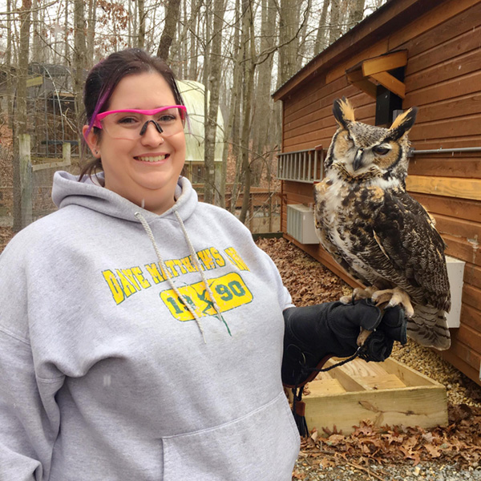

Contact
Shelly Hokanson
54 Bluestone Dr
Harrisonburg, VA 22807

Skills & Specialties
Languages, Platforms, Frameworks
HTML5, JavaScript, EC6, jQuery, AngularJS, Bootstrap 4, CSS3, SQL, WordPress
Servers & Operating Systems
OS X, Linux, Windows, Apache Web Server, MySQL
Applications
Adobe Creative Cloud (Photoshop, Lightroom, Dreamweaver, InDesign, Illustrator), Final Cut Pro X, Microsoft Office (Word, Excel, Access, PowerPoint), Microsoft Visual Studio Code, all major web browsers, FTP client and server software, and the ever-underestimated plain text editor (Sublime FTW)
Education
Master of Fine Arts in Independent Film & Digital Imaging
Governors State University, University Park, IL
- December 2012
- GPA 3.950/4.0
Photographic Studies
Prairie State College, Chicago Heights, IL
- May 2007 – May 2010, 42 credits completed in Photography and Art
- GPA 3.905/4.0
Master of Education
University of Illinois at Urbana-Champaign, IL
- August 2005
- GPA 3.87/4.0
Bachelor of Business Administration
Robert Morris College, Chicago, IL
- Major: Computer Information Systems
- Graduated Summa Cum Laude, GPA 3.92/4.0
Experience
August 2011 - present
James Madison University, Harrisonburg, VA
Associate Professor, Interactive Design (formerly Converged Media)
School of Media Arts & Design (SMAD)
- Teach courses in user experience design, web development, and interactive media
- Director, Ireland: Media, Culture & Society Study Abroad Program, 2019 - present
- Co-Director, Ireland: Media, Culture & Society Study Abroad Program, 2017 - 2019
- Coordinator, Interactive Design Concentration, 2019 - present
- Elected member of the SMAD Curriculum & Instruction Committee (C&I), 2012 - 2017, 2018 - present
- Elected member of the SMAD Personnel Advisory Committee (PAC), 2013 - 2015, 2019 - present
- Assessment Committee, 2016 - present
- Admissions Committee, 2017 - 2019
- Annual Program Review Committee, 2014 - 2017
- Coordinator, Web Foundations, 2017 - 2019
- Coordinator, Converged Media Concentration, 2013 - 2017
- Faculty Advisor to the SMAD Club, 2011-2016
- Chair of the inter-departmental Computer Oriented Career Options Committee (COCO), 2013 - 2016
- Admissions Committee, Test Coordinator, 2012 - 2013
- 2012 Edith J. Carrier Arboretum Collaborative Fellow
August 2001 - July 2011
Prairie State College, Chicago Heights, IL
Professor, Graphic Communication
Coordinator, Graphic Communication Program
- Taught courses in web programming and application development, web design, creative writing and storytelling for game design, computer networking, and network security
- Developed and continually updated graphic design courses, programs, and curriculum plans
- Coordinated the graphic communications program for the Fine & Applied Arts department, 2010 – 2011
- Coordinated the web development, programming, and networking areas for the Information Technology (IT) department, 2003 – 2010
- Developed & delivered training workshops for faculty on best practices for implementing technology in the classroom
- Active in distance education issues and online curriculum development
- Member of the Instructional Technology committee, 2001 – 2011
- Chair of the Instructional Technology committee, January 2005 – 2009
- Elected member of the Curriculum Committee, 2004 – 2005
- Elected member of the Faculty Senate, August 2004 – July 2011
- Elected Officer of the Faculty Senate (Secretary), January 2006 – 2009
- Selected member of the Technology Planning Committee, January 2007 – 2011
- Member of the Illinois IT Working Connections Institute Faculty Advisory Board, 2006 – 2011